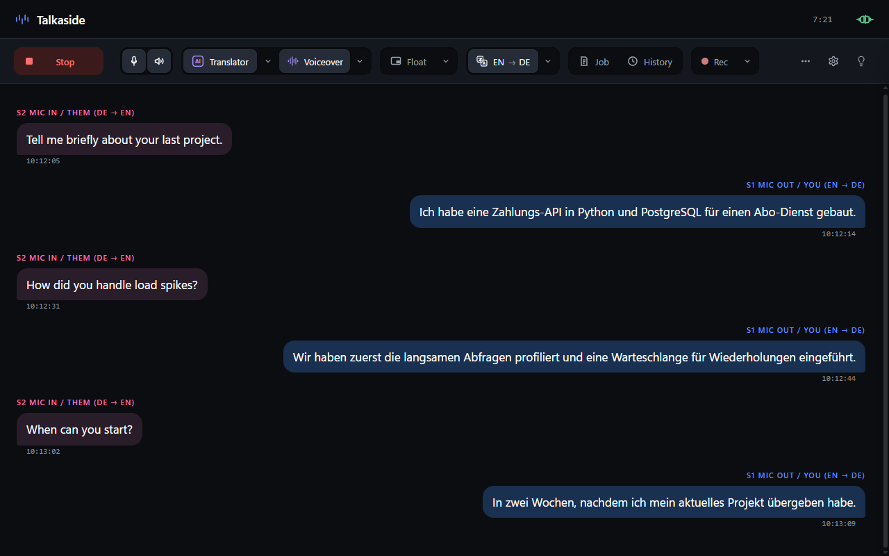
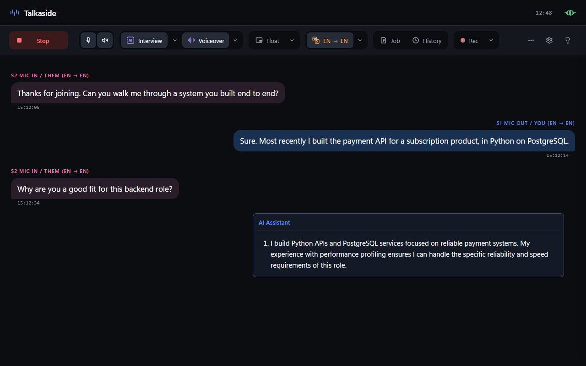
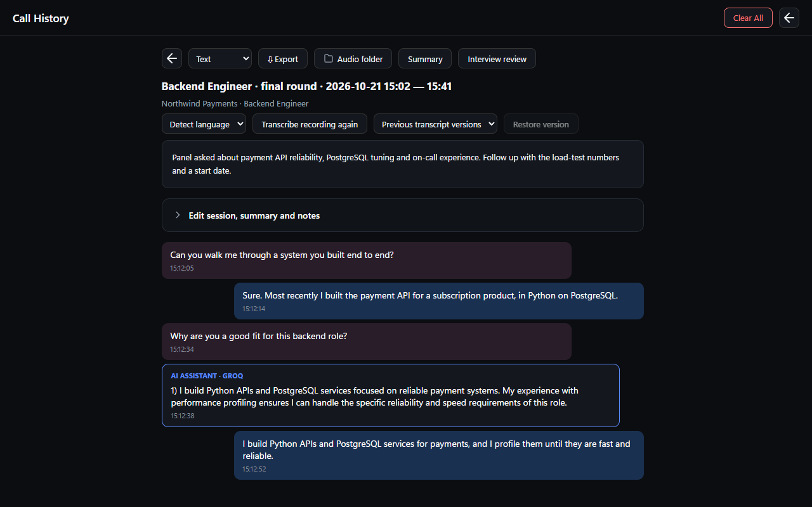

Beide Seiten, übersetzt während sie sprechen
Beide Seiten werden in Echtzeit transkribiert und übersetzt. So folgen Sie dem Gegenüber und antworten in Ihrer Sprache.

Talkaside schlägt Antworten vor und übersetzt Ihre Gespräche live, für Windows.

Bleiben Sie im Gespräch, während Talkaside mithört, Antworten vorschlägt und übersetzt.
Beide Seiten werden in Echtzeit transkribiert und übersetzt. So folgen Sie dem Gegenüber und antworten in Ihrer Sprache.

Zwei KI-Assistenten entwerfen Antworten aus der Mitschrift, Ihrem Lebenslauf und der Stelle. Formulieren Sie sie auf Ihre Art.
Nehmen Sie 10 bis 60 Sekunden auf, für ein lokales Stimmprofil. Benötigt eine NVIDIA-GPU.
Ein Fenster für Vorschläge, das immer obenauf liegt und bei unterstützten Bildschirmfreigaben draußen bleibt. Testen Sie es.
Transkripte und Sitzungen werden auf Ihrem PC gespeichert. Die Aufnahme des Gesprächs ist optional und bleibt aus, bis Sie sie einschalten.
Gesprochenes und Text gehen nur an die Spracherkennungs- und KI-Anbieter, die Sie einrichten. Diese sehen, was Sie ihnen senden, wählen Sie sie also mit Bedacht aus.
Laden Sie sie unter talkaside.com herunter und starten Sie den Installer unter Windows.
Wählen Sie Ihre Sprachen und die Spracherkennungs- und KI-Anbieter, die Sie nutzen möchten.
Drücken Sie Start. Mitschrift, Vorschläge und Übersetzung erscheinen, während gesprochen wird.
Jede Sitzung wird mit Transkript, KI-Antworten und einer Zusammenfassung gespeichert, die Sie bearbeiten und exportieren können.

Windows 10 und 11, 64-Bit. Eine Version für andere Systeme gibt es nicht.
Ja. Sie läuft 5 Tage mit einer Aktivierung pro Gerät. Cloud-KI- und Sprachanbieter rechnen separat mit Ihnen ab.
Nur an die Sprach- und KI-Anbieter, die Sie einrichten. Kein Talkaside-Server liegt im Audiopfad.
Der Installer ist nicht code-signiert, daher kann Windows SmartScreen beim ersten Start warnen.
Transkripte und Sitzungen werden auf Ihrem PC gespeichert. Die Aufnahme ist optional und bleibt aus, bis Sie sie einschalten.